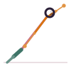

Side Plank Pose
Vasisthasana
How to
From Plank Pose, shift the weight onto one hand and the outer edge of that foot, stacking the body sideways and reaching the top arm toward the ceiling.
Benefits
- Strengthens the arms, core and obliques
- Improves balance
- Builds wrist and shoulder stability
Practice
Hold for 5 breaths per side, stacking the hips rather than letting them sink.
Get the Asanas appFree, no ads, works offline
Google Play
General information, not medical advice. If you have a health condition or pain, talk to a doctor or qualified teacher first.